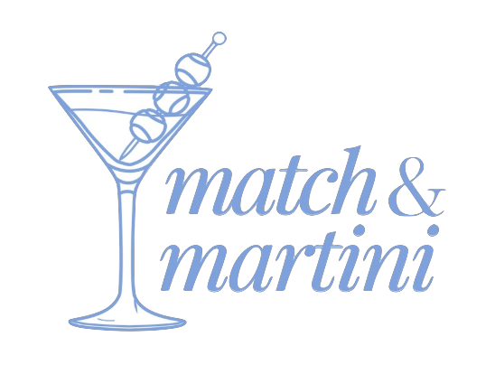
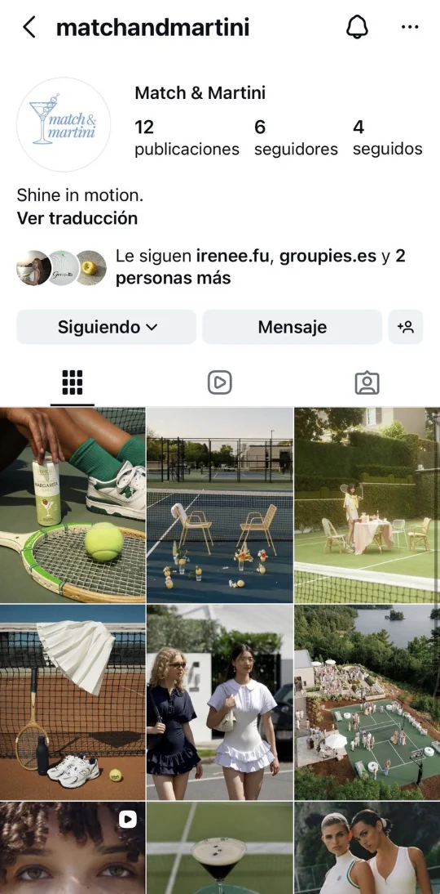

PROYECTO / 03
Concepto de marca · Estrategia
Match & Martini
De la pista al siguiente plan.

Un concepto de marca de ropa deportiva femenina que une deportes de raqueta, moda y vida social. Funcionalidad y una identidad propia, dentro y fuera de la pista.
- DISCIPLINAS
- Concepto de marca, posicionamiento, producto y estrategia de comunicación
- ENFOQUE
- Proyecto conceptual de marca y plan de negocio. Los atributos de producción y producto forman parte de la propuesta.
01 / EL CONCEPTO
Deporte. Identidad. Vida social.
El punto de partida es un espacio entre dos extremos: prendas técnicas con poca expresión personal y propuestas estéticas que no acompañan la actividad real. Match & Martini plantea una forma de unir esos mundos.
La propuesta contempla producción local en España, materiales más responsables y una oferta de tallas inclusiva. La comunidad, los eventos y una comunicación honesta sobre procesos y uso real son el centro de la estrategia.


02 / EL PROCESO
Una identidad en movimiento.
El vestido Zafiro se plantea como la prenda central de la colección: cuello polo, cremallera frontal, falda de volantes y shorts integrados. La estrategia conecta el producto con contenido en movimiento, eventos propios y una comunidad alrededor de los deportes de raqueta.